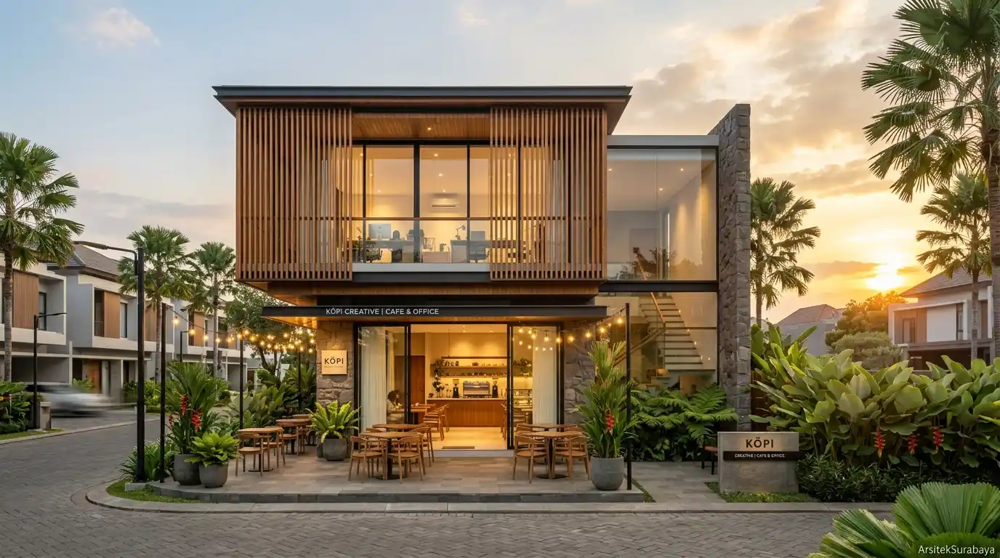
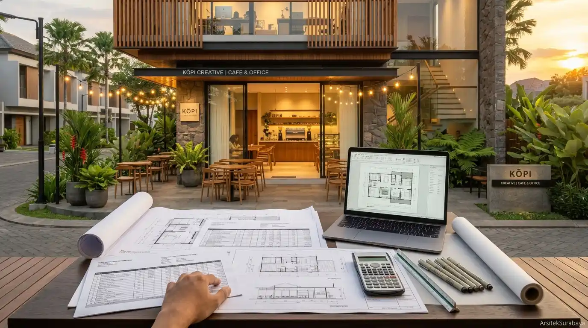
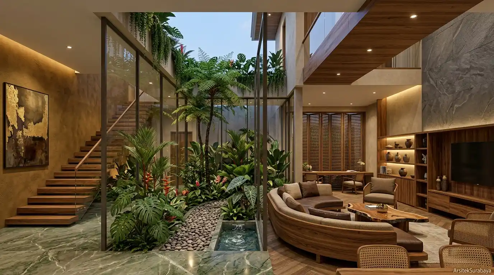
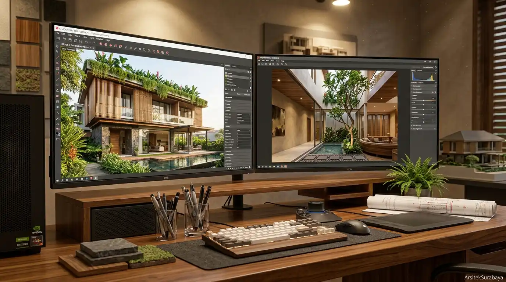
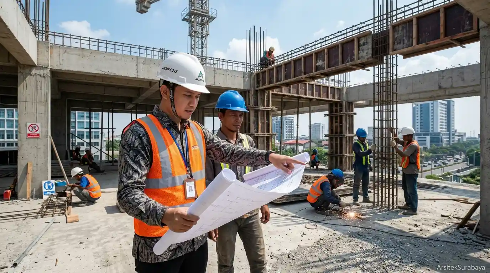

Layanan Jasa
Layanan Kami
Solusi Terpadu Perancangan Arsitektur

1. Desain Arsitektur Rumah
Perancangan sketsa layout, fasad 3D photorealistic yang memukau, serta gambar kerja teknis bangunan hunian pribadi yang ramah iklim tropis.

2. Desain Bangunan Komersial
Perancangan ruang usaha fungsional berestetika tinggi seperti kafe, kantor boutique, ruko, rukan, hingga vila komersial di wilayah Surabaya.

3. Penyusunan RAB & Gambar IMB
Perhitungan estimasi biaya konstruksi (RAB) presisi guna menghindari pembengkakan dana serta penyediaan dokumen kelayakan pendaftaran PBG/IMB.

4. Desain Interior & Lanskap
Perencanaan tata ruang dalam (interior) yang selaras dengan karakter bangunan serta lanskap hijau penyejuk iklim tropis.

5. Visualisasi 3D Berkualitas Tinggi
Penyajian render gambar 3 dimensi yang sangat realistis untuk memudahkan Anda melihat hasil akhir sebelum proses konstruksi dimulai.

6. Pengawasan Berkala Konstruksi
Layanan supervisi dan pendampingan teknis ke lapangan secara berkala untuk memastikan pelaksanaan fisik akurat sesuai gambar kerja.
Siap Mewujudkan Bangunan Impian Anda Bersama Kami?
Diskusikan kebutuhan arsitektur dan estimasi anggaran proyek Anda sekarang.
Mulai Konsultasi Layanan